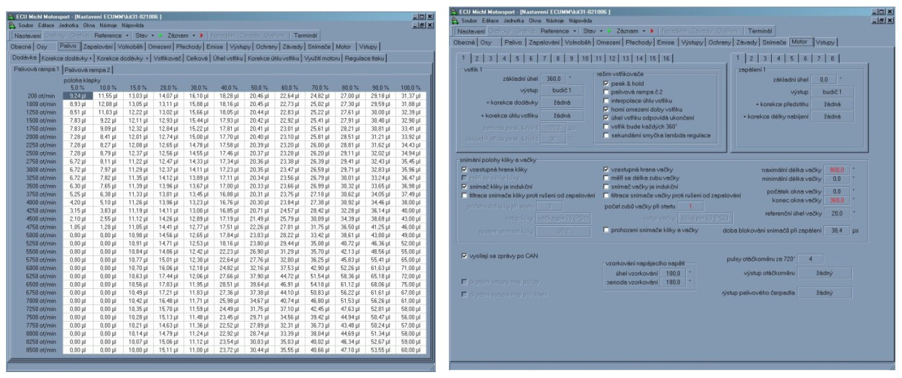

elektronika

Osvědčená technika pro běžné použití. Jednotka je s úspěchem používána na mnoha motorech, vzhledem k možnosti zabezpečení proti změně nastavení a jednoduchosti kontroly nastavení vhodná pro pohárové seriály.
Řídící jednotka je kompletně navržena pro 16 bitovou technologii. Tuto podmínku splňuje jak procesor Motorola s 16 bitovou vnější sběrnicí tak i použitý firmware, který u tabulek počítá také s 16 bitovou hodnotou. Připojovací konektor vychází ze standardního konektoru použitého u řídících jednotek motorů Škoda/VW s obsahy 1.3, 1.6 a 1.8 l.
Řídící jednotka podporuje následující prvky:
- až 6 nezávisle řízenýh budičů zapalovacích cívek
- až 12 nezávisle řízených vstřikovačů; podporovány jsou jak saturované typy, tak peak&hold a je možná i jejich současná kombinace.
- nastavování vačkového hřídele (Vanos) vypnuto/zapnuto
- regulační těleso volnoběhu
- regulátor tlaku paliva nebo alternativně změnu geometrie sacího potrubí
- snímání lambda sondy (i širokorozsahové)
- ohřev lambda sond
- výstup na otáčkoměr (úroveň 5V nebo případně 12V)
- přepouštěcí ventil aktivního uhlí
- ovládání palivového čerpadla
- dva víceúčelové výstupy/výstupy programovatelné podle potřeby. Jako příklad můžeme uvést např.:
- signalizace optimálních podmínek pro řazení
- krátkodobé snížení dodávky paliva na impuls od sekvenční převodovky
- připojení záznamového zařízení, diagnostického panelu nebo elektronické palubní desky pomocí komunikační linky RS232
- snímače polohy motoru - snímač kliky a pro plně sekvenční vstřik i snímač vačky / je možné použít Hallovy i indukční snímače
- snímač objemu vzduchu procházejícího sacím potrubím
- snímač tlaku vzduchu v sacím potrubí
- snímač teploty chladícího média
- snímač teploty nasávaného vzduchu
- podpůrné snímače (libovolný vstup je možné nahradit jinou veličinou a tu zahrnout do regulačních nebo záznamových algoritmů). Proto je uvedena jako příklad pouze jedna z možných konfigurací:
- teplota oleje
-tlak oleje
- teplota paliva
- tlak paliva
- barometrický tlak vzduchu
- teplota hlav
Základní koncepce řídící jednotky počítá s úplně nezávislým řízením každého budiče zapalovaní i budiče vstřikovačů. Základní parametry pro tyto prvky jsou:
budič zapalovaní
předstih a doba nabíjení zapalovací cívky
jedna sada základního nastavení
vstřikovač
doba vstřiku a úhel začátku vstřiku
dvě sady základního nastavení (vstřikovací rampa 1 a 2)
typ vstřikovače (saturovaný / peak&hold)
S ohledem na jednodušší postup nastavování je vždy základní nastavení společné pro jednotlivé prvky a to se vždy koriguje individuální korekcí prvku. U vstřikovačů je podporována varianta dvou odlišných sad 1 a 2.
Při ladění motoru je možno využívat speciálního zařízení pro analogové nastavování požadovaných parametrů a to jak pro jednotlivé válce tak pro skupiny válců.
S ohledem na rozdílné podmínky na závodní trati je podporováno až 6 alternativních nastavení řídící jednotky. Konkrétní varianta je volitelná přepínačem podle specifických požadavků zákazníka.
Parametry jsou ukládány jako dvourozměrné tabulky s prostorovou interpolací. Jednou osou jsou otáčky motoru, druhá má tři přepínatelné alternativy:
* množství nasávaného vzduchu
* tlak v sacím potrubí
* poloha škrtící klapky
Technické parametry regulačního systému motoru
Celý systém motoru je řízen na základě úhlového systému s periodou 720°. Pozice 0° odpovídá horní úvrati při zapálení směsi ve válci. Pokud není motor vybaven snímačem vačky, není možno určit zda se jedná o lichou nebo sudou otáčku kliky. Systém si v tomto případě sám náhodně podle polohy
kliky při startu zvolí, která otáčka je lichá.
Konfigurace snímačů polohy natočení motoru, typy vstřikovačů a jejich přiřazení ke vstřikovacím rampám a pořadí zapalování je určeno variantou programu. Pro jinou konfiguraci motoru je nutné do řídící jednotky nahrát jiný program.

Máte dotazy? Napište nám na info@michl-motorsport.cz nebo zavolejte +420 5 41 42 43 44